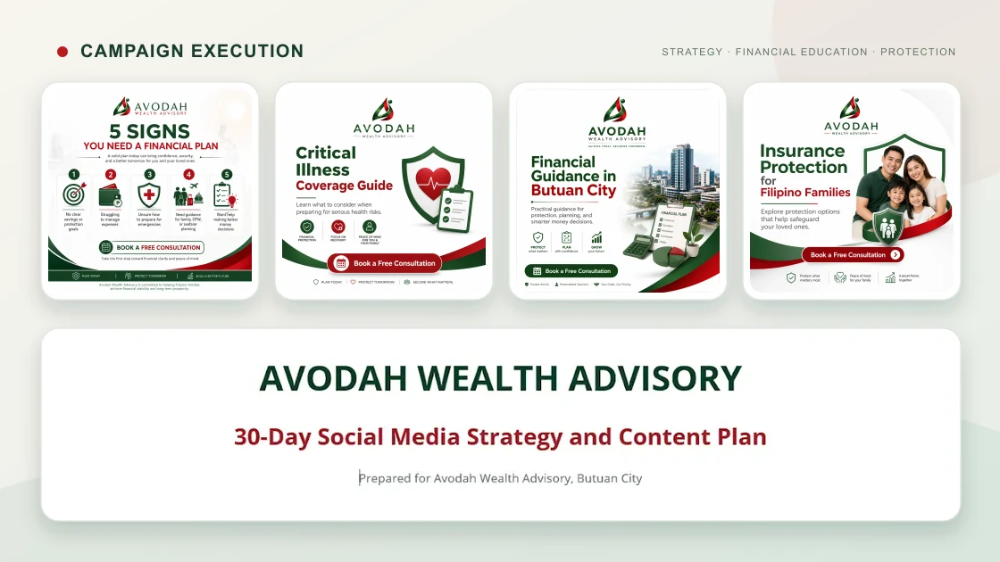

Business Operations
Administrative coordination, operational support, reporting, task management, and workflow organization.
Business Operations & Executive Support Specialist
I help executives, entrepreneurs, and growing businesses stay organized, efficient, and focused on growth through reliable administrative, operational, and digital support.
How I support the business
Business Operations is the anchor. The other services extend the same focus on clarity, visibility, and follow-through.
Administrative coordination, operational support, reporting, task management, and workflow organization.
Calendar management, appointment coordination, executive communications, documentation, and leadership support.
Google Sheets, Apps Script, dashboards, workflow automation, and process optimization.
SOPs, policies, proposals, service agreements, process documentation, and internal knowledge bases.
Website management, content updates, digital QA, GitHub workflows, deployments, and digital systems support.
Content planning, social media coordination, campaign support, website content, and marketing operations.
Selected projects
Case studies focus on contribution and documented outputs rather than unsupported performance claims.
Business Operations · Systems · Recruitment · Marketing
Operations architecture, dashboards, appointment-setter systems, recruitment coordination, documentation, content planning, and campaign execution.
View case study →Digital Product · GitHub · Release Operations
Repository-health product with assessment workflows, documentation, release planning, GitHub coordination, and deployment support.
View case study →Brand · Website · Recruitment Messaging
Brand system, website execution, recruitment messaging, and content operations for a leadership and career community.
View case study →Product Operations · QA · Release Readiness
Product coordination, digital QA, release-readiness checks, documentation, deployment validation, and systems support.
View case study →Proof of work
Portfolio previews use verified project screenshots while excluding applicant-level personal data and internal identifiers.



Verified live work
About JC
My work sits at the intersection of executive support, business operations, and digital execution.
I bring strong attention to detail, clear communication, practical problem-solving, and adaptability across changing priorities, tools, and systems. Productivity tools, automation, and AI-assisted solutions are used where they add practical value—not as a substitute for judgment.
Let’s work together
Start with the operational challenge. Share what is creating friction, what tools are already in place, and what a better outcome should look like.